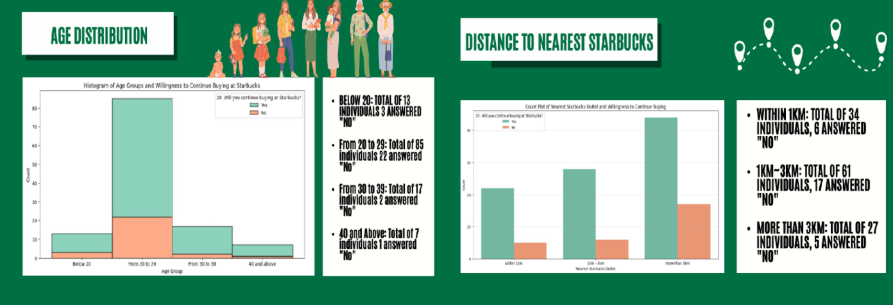
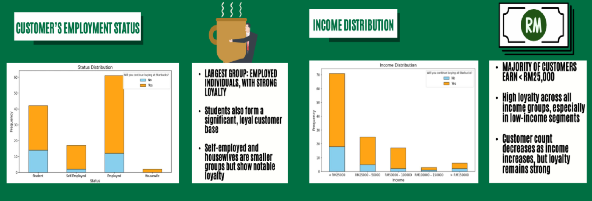
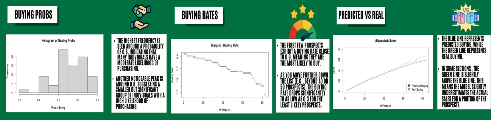

Brewing Insights : Unlocking customer analytics
R | SQL | Data Analyst | Visualization
In this project, my team and I explored how customer analytics can drive strategic decision-making for Starbucks Malaysia, a market facing the dual challenge of retaining loyalty and boosting revenue. Leveraging survey data, we segmented customers by age, income, distance to store, and employment status to uncover patterns in loyalty and purchase behavior. Using list scoring models, we predicted purchase probabilities and designed targeted marketing actions based on buying likelihood. Additionally, we applied market basket analysis to identify key loyalty drivers—finding that price sensitivity is a major barrier among Malaysian consumers. Our recommendations included tailored promotions, direct marketing to high-probability segments, and future use of conjoint analysis to determine willingness to pay. This project highlights how data-driven strategies can unlock growth potential in saturated markets.

Our customer segmentation analysis revealed that individuals aged 20 to 29 represent the largest and most promising target group for Starbucks Malaysia, comprising 85 respondents with relatively low attrition (only 22 responded "No" to continued patronage). Meanwhile, younger consumers under 20 and those aged 30–39 also show solid engagement, though in smaller numbers. In terms of geographic accessibility, loyalty tends to be higher among those who live farther from a Starbucks location—particularly the group residing more than 3km away, where only 5 out of 27 indicated they would not continue buying. This suggests that distance alone isn’t a key deterrent, and that targeting young adults across all distances could be an effective strategy for customer retention and growth.

Our analysis of customer demographics revealed two particularly loyal segments: employed individuals and low-income earners. Employed customers make up the largest group and exhibit strong brand loyalty, followed by students, who also represent a significant and engaged base. While self-employed individuals and housewives form smaller portions of the sample, they nonetheless show consistent purchasing behavior. On the financial front, the majority of customers earn less than RM25,000 annually, yet this group still demonstrates high loyalty to Starbucks. Interestingly, although the number of customers decreases as income rises, loyalty remains steady across all income levels—indicating that income alone is not a barrier to brand commitment. These findings suggest that strategic efforts should prioritize employed and student segments, while also nurturing potential among niche loyalists.
The business challenge for Starbucks Malaysia centered on the need to boost revenue and maintain competitiveness in a saturated market. Despite strong product offerings, existing strategies had fallen short in maximizing customer retention and expanding the customer base. To address this, we implemented a list scoring approach—an analytical method used to prioritize individuals based on their likelihood to purchase. By integrating variables like distance to store, preferred buying methods, and satisfaction levels, we were able to rank customers by purchase probability. This empowered Starbucks to tailor its outreach, focus efforts on high-probability buyers, and implement more targeted, data-driven marketing campaigns.

The list scoring model offered valuable insights into customer purchase behavior by predicting buying probabilities across different segments. The histogram of buying probabilities showed that most individuals fell around a moderate likelihood of purchasing (~0.6), while a smaller yet impactful group peaked near 0.8, indicating high purchase intent. Further analysis of marginal buying rates revealed that the top-ranked prospects had rates close to 0.9, but this figure dropped significantly beyond the top 40–50 individuals, reaching as low as 0.3 among the least likely buyers. When comparing predicted sales against actual outcomes, the model generally tracked well, though it slightly underestimated real sales for certain prospects. These insights enabled Starbucks to prioritize high-potential customers, optimize marketing resources, and refine outreach strategies based on predicted engagement levels.
Through comprehensive customer analytics, our team identified key demographic and behavioral factors driving loyalty and purchase intent for Starbucks in the Malaysian market. Employed individuals, students, and low-income customers emerged as the most loyal segments, regardless of proximity to store locations. By implementing a list scoring model, we effectively predicted buying probabilities and identified high-value prospects for targeted marketing. Although the model slightly underestimated actual sales in some cases, it successfully segmented customers by purchase likelihood, enabling smarter resource allocation. These findings highlight the power of data-driven strategies to enhance customer retention, guide promotional efforts, and ultimately boost revenue in a competitive retail landscape.